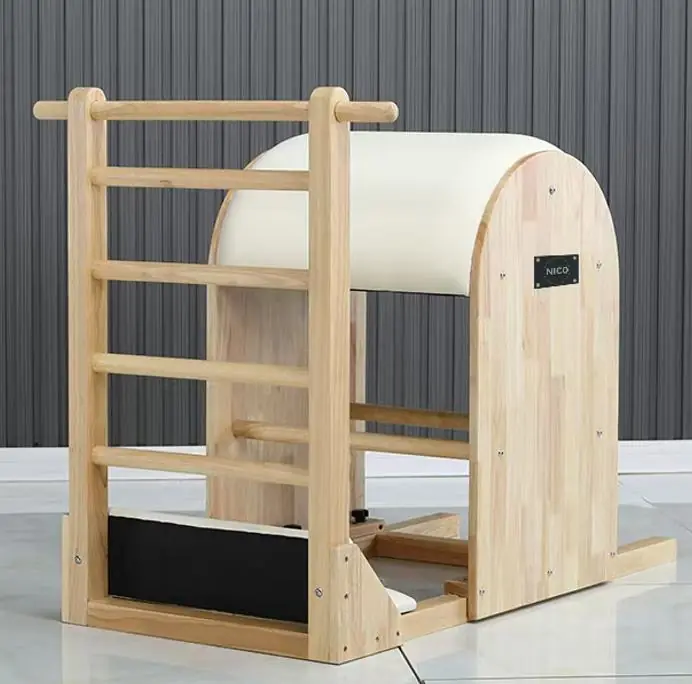

Reformer, Cadillac, Wunda Chair, Ladder Barrel, Spine Corrector, ensembles de studio et pièces spéciales — 41 modèles répartis sur 8 gammes, en bois d'hévéa importé, érable blanc de qualité FAS, laque piano, hêtre croate, aluminium et acier 316. Même usine que pour notre gamme de tapis de yoga, mais sur une autre ligne de production.
Choisissez une gamme pour comparer côte à côte tous les modèles en fonction du bois, des dimensions, du nombre de ressorts et de l'orientation, puis demandez un devis en indiquant le code.

L'« Reformer » est la machine autour de laquelle s'articule tout studio. Nous la fabriquons à partir de bois d'hévéa importé, d'érable blanc de qualité FAS ou recouvert d'une laque piano, ainsi que de hêtre croate, avec des rails en acier inoxydable, des sil…

La table trapèze «Cadillac» offre le plus large éventail d'exercices parmi tous les appareils de Pilates. Nos structures sont livrées avec une colonne en acier inoxydable, dix ressorts de colonne, une barre de poussée, une tra…

Un piano droit compact à colonne à ressort, doté d’une pédale articulée, conçu pour les cours particuliers et les petits studios. Pédale réglable à plusieurs positions, quincaillerie en acier inoxydable et un châssis qui s’intègre dans…

Un arc en bois massif muni d'un échelon réglable, destiné aux exercices d'extension de la colonne vertébrale, d'étirement et de flexion latérale. L'échelon pouvant être réglé sur plusieurs positions, un seul appareil convient à tous les types de morphologie…

Ce petit tonneau à gradin sert à la mobilisation de la colonne vertébrale, à l'extension thoracique et aux exercices pour les épaules. Suffisamment léger pour être déplacé entre la zone des tapis et celle des appareils, et c'est le moins cher…

Une demi-tour se fixe à l'extrémité d'une structure «Reformer» pour ajouter des ressorts de tour et une barre à enfiler sans occuper d'espace au sol. Cette configuration 3-en-1 combine une structure «Reformer», une demi-tour et une tour complète…

Reformer, Ladder Barrel, Wunda Chair, Spine Corrector et Cadillac dans une commande coordonnée : même bois, même cuir, même finition des ferrures. Le moyen le plus rapide d'équiper un nouveau studio, un…

Au-delà des cinq appareils classiques : l’Ladder Bede bidirectionnelle pour la rééducation à haut volume et le kit « Gyrotonic » (tour de rotation + tour à poulies) pour le travail tridimensionnel de la colonne vertébrale. Conçu pour…

La société FUJIAN SANFAN fabrique des articles de yoga et de fitness depuis plus d'une décennie. La gamme d'appareils est issue de la même chaîne d'approvisionnement en bois et en tissus d'ameublement ; ainsi, une commande destinée à un studio et une commande de tapis peuvent être regroupées, et une seule équipe de contrôle qualité se charge de valider les deux.
Demandez dès aujourd'hui un devis personnalisé et des échantillons gratuits.
Contactez notre équipe